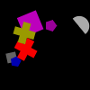
(1)
The leftmost square is gray.
The darkest gray shape is a rectangle.
The upper gray shape is a pentagon.
The bigger square is magenta.
The right magenta shape is a circle.
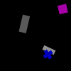
(2)
The darkest rectangle is gray.
The rectangle farther from the cross is blue.
The rectangle farther from the blue cross is magenta.
The darker gray shape is a semicircle.
The darker gray shape is a rectangle.
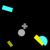
(3)
The darkest rectangle is gray.
The biggest yellow shape is a cross.
The lighter yellow shape is a rectangle.
The darker gray shape is a semicircle.
The bigger yellow shape is a rectangle.
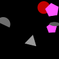
(4)
The pentagon farthest from the red shape is magenta.
The uppermost pentagon is magenta.
The smallest magenta shape is a triangle.
The rightmost gray shape is a pentagon.
The lowermost pentagon is magenta.
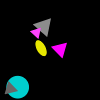
(5)
The darkest magenta shape is an ellipse.
The darkest triangle is cyan.
The bigger gray shape is a triangle.
The lighter magenta shape is a triangle.
The leftmost triangle is gray.
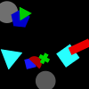
(6)
The biggest square is gray.
The smaller blue shape is a pentagon.
The leftmost green shape is a triangle.
The leftmost blue shape is a pentagon.
The darker red shape is a semicircle.
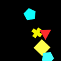
(7)
The cyan shape farther from the yellow square is a pentagon.
The darkest cyan shape is a square.
The lower pentagon is gray.
The right pentagon is cyan.
The rightmost yellow shape is a square.
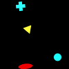
(8)
The cyan shape farther from the yellow triangle is a circle.
The lowermost cyan shape is a cross.
The cyan shape farthest from the yellow triangle is a semicircle.
The lowermost cyan shape is a circle.
The left cyan shape is a circle.
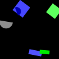
(9)
The rectangle farther from the green square is blue.
The uppermost semicircle is gray.
The lower green shape is a square.
The smallest square is green.
The lowermost green shape is a rectangle.
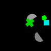
(10)
The lightest gray shape is a semicircle.
The uppermost gray shape is an ellipse.
The semicircle farther from the green cross is gray.
The left semicircle is gray.
The uppermost gray shape is a semicircle.
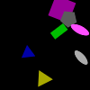
(11)
The ellipse farthest from the blue shape is magenta.
The lightest gray shape is an ellipse.
The gray shape farther from the magenta square is an ellipse.
The leftmost magenta shape is a rectangle.
The gray shape closer to the blue shape is an ellipse.
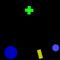
(12)
The right blue shape is a circle.
The circle farther from the yellow rectangle is green.
The right blue shape is a cross.
The lighter circle is blue.
The right blue shape is a circle.
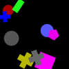
(13)
The rightmost gray shape is a cross.
The leftmost magenta shape is a triangle.
The rightmost magenta shape is a pentagon.
The lightest blue shape is a circle.
The right magenta shape is a square.
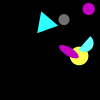
(14)
The upper cyan shape is a rectangle.
The lightest cyan shape is a circle.
The lowermost circle is magenta.
The lowermost circle is yellow.
The leftmost circle is gray.
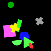
(15)
The darkest green shape is a circle.
The leftmost green shape is a circle.
The lowermost cross is yellow.
The lower cross is gray.
The left cross is yellow.
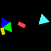
(16)
The lower rectangle is red.
The right rectangle is yellow.
The triangle farthest from the red shape is cyan.
The upper rectangle is red.
The upper rectangle is red.
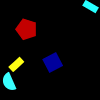
(17)
The cyan shape farthest from the red pentagon is a pentagon.
The cyan shape farther from the red pentagon is a rectangle.
The rightmost rectangle is yellow.
The upper rectangle is yellow.
The upper rectangle is yellow.
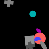
(18)
The darker cross is gray.
The lower circle is green.
The circle farther from the square is cyan.
The smallest circle is magenta.
The lowermost cross is cyan.
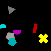
(19)
The upper gray shape is a rectangle.
The pentagon closer to the cross is gray.
The darkest gray shape is a triangle.
The leftmost semicircle is magenta.
The gray shape farthest from the magenta shape is an ellipse.
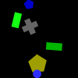
(20)
The lighter rectangle is blue.
The upper pentagon is yellow.
The darkest blue shape is a circle.
The upper blue shape is a pentagon.
The biggest pentagon is yellow.
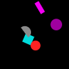
(21)
The smallest circle is red.
The darker magenta shape is a semicircle.
The upper circle is magenta.
The leftmost magenta shape is a rectangle.
The rightmost circle is red.
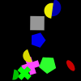
(22)
The blue shape closer to the green semicircle is a pentagon.
The leftmost semicircle is blue.
The green shape farthest from the magenta cross is a semicircle.
The lightest blue shape is a semicircle.
The lowermost cross is magenta.
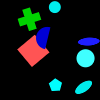
(23)
The biggest cyan shape is a circle.
The lightest circle is cyan.
The lighter blue shape is a semicircle.
The right ellipse is green.
The darkest circle is blue.
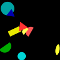
(24)
The left cyan shape is a semicircle.
The left triangle is yellow.
The right triangle is magenta.
The lighter circle is cyan.
The right circle is cyan.
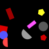
(25)
The lowermost gray shape is a circle.
The darkest red shape is a semicircle.
The right semicircle is red.
The red shape closest to the gray circle is a triangle.
The bigger gray shape is a semicircle.
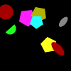
(26)
The leftmost pentagon is red.
The lower ellipse is red.
The darkest yellow shape is a square.
The right yellow shape is a pentagon.
The darkest pentagon is cyan.
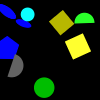
(27)
The upper yellow shape is a square.
The biggest ellipse is gray.
The darker square is yellow.
The rightmost yellow shape is a square.
The green shape farther from the pentagon is a square.
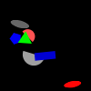
(28)
The upper blue shape is a square.
The lowermost red shape is a square.
The upper red shape is a semicircle.
The uppermost gray shape is an ellipse.
The right blue shape is a rectangle.
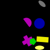
(29)
The lightest yellow shape is a cross.
The lowermost magenta shape is a cross.
The left yellow shape is an ellipse.
The yellow shape farther from the blue circle is a rectangle.
The rightmost ellipse is gray.
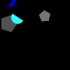
(30)
The smallest gray shape is a pentagon.
The lighter gray shape is a circle.
The lowermost pentagon is cyan.
The lighter pentagon is blue.
The leftmost gray shape is a square.
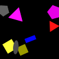
(31)
The bigger pentagon is magenta.
The lower square is red.
The left gray shape is an ellipse.
The uppermost gray shape is a circle.
The upper yellow shape is a square.
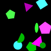
(32)
The uppermost green shape is a pentagon.
The lightest magenta shape is a circle.
The lowermost triangle is gray.
The right triangle is cyan.
The uppermost magenta shape is a circle.
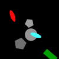
(33)
The lighter pentagon is green.
The lowermost gray shape is a triangle.
The left ellipse is cyan.
The gray shape closest to the red ellipse is a triangle.
The leftmost ellipse is cyan.
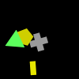
(34)
The yellow shape farther from the green triangle is a rectangle.
The lower yellow shape is an ellipse.
The right yellow shape is a rectangle.
The lower yellow shape is a cross.
The lower yellow shape is a rectangle.
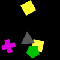
(35)
The right yellow shape is a triangle.
The lowermost yellow shape is a triangle.
The lowermost square is yellow.
The upper yellow shape is a square.
The square farther from the triangle is yellow.
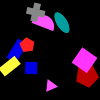
(36)
The rightmost pentagon is red.
The smaller red shape is a pentagon.
The right square is magenta.
The upper square is magenta.
The lowermost pentagon is green.
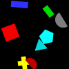
(37)
The biggest rectangle is green.
The left red shape is a semicircle.
The bigger semicircle is gray.
The red shape farther from the triangle is a square.
The lower semicircle is green.
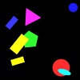
(38)
The smallest yellow shape is a rectangle.
The rectangle farthest from the green pentagon is yellow.
The yellow shape closer to the cyan ellipse is a semicircle.
The upper yellow shape is a rectangle.
The yellow shape closer to the red shape is a rectangle.
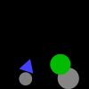
(39)
The smaller gray shape is a circle.
The rightmost gray shape is a circle.
The biggest gray shape is a triangle.
The bigger gray shape is a triangle.
The right gray shape is a cross.
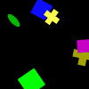
(40)
The lighter cross is yellow.
The darker yellow shape is an ellipse.
The cross closer to the ellipse is magenta.
The biggest yellow shape is a square.
The uppermost green shape is a square.
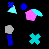
(41)
The bigger pentagon is gray.
The rightmost cyan shape is an ellipse.
The leftmost cyan shape is a triangle.
The smallest cross is gray.
The darkest cyan shape is a circle.
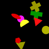
(42)
The uppermost yellow shape is a triangle.
The lower circle is yellow.
The cross farther from the magenta circle is yellow.
The circle farthest from the yellow cross is yellow.
The rightmost red shape is a triangle.
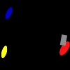
(43)
The ellipse closest to the gray shape is cyan.
The leftmost ellipse is yellow.
The rightmost ellipse is yellow.
The ellipse closest to the gray shape is gray.
The ellipse farthest from the rectangle is green.
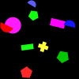
(44)
The smaller rectangle is green.
The pentagon closest to the magenta circle is red.
The bigger rectangle is magenta.
The smallest rectangle is magenta.
The bigger rectangle is red.
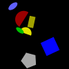
(45)
The semicircle farthest from the gray pentagon is red.
The rightmost ellipse is green.
The darker blue shape is a square.
The upper semicircle is red.
The leftmost blue shape is an ellipse.

(46)
The rightmost square is gray.
The ellipse closer to the yellow square is gray.
The square farther from the gray semicircle is blue.
The gray shape closest to the yellow square is an ellipse.
The lowermost gray shape is an ellipse.
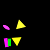
(47)
The darkest magenta shape is a rectangle.
The rightmost yellow shape is an ellipse.
The lightest magenta shape is a pentagon.
The lowermost magenta shape is a square.
The lower triangle is blue.
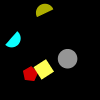
(48)
The lowermost semicircle is cyan.
The uppermost semicircle is blue.
The yellow shape farthest from the pentagon is a triangle.
The lightest yellow shape is a square.
The yellow shape farthest from the cyan semicircle is a circle.
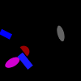
(49)
The smallest blue shape is a semicircle.
The uppermost blue shape is an ellipse.
The lower ellipse is red.
The left blue shape is a triangle.
The rectangle farthest from the magenta ellipse is magenta.
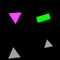
(50)
The left gray shape is a rectangle.
The smallest triangle is gray.
The gray shape closest to the green rectangle is a triangle.
The gray shape closer to the green rectangle is a triangle.
The gray shape closer to the magenta shape is a triangle.
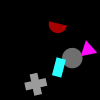
(51)
The leftmost gray shape is a circle.
The right gray shape is a circle.
The lower gray shape is a cross.
The gray shape farthest from the magenta triangle is a cross.
The rightmost gray shape is a cross.
(52)
The right square is red.
The bigger green shape is a square.
The uppermost green shape is a rectangle.
The uppermost green shape is a square.
The square closer to the red shape is green.

(53)
The red shape closest to the pentagon is a semicircle.
The uppermost red shape is a pentagon.
The uppermost red shape is a triangle.
The darker red shape is a semicircle.
The red shape farther from the cyan shape is a cross.
(54)
The darkest green shape is a rectangle.
The lowermost triangle is green.
The ellipse closest to the gray shape is green.
The right ellipse is green.
The triangle closest to the yellow semicircle is green.
(55)
The bigger semicircle is yellow.
The pentagon farthest from the yellow shape is red.
The lower red shape is a pentagon.
The semicircle farthest from the gray pentagon is magenta.
The magenta shape farther from the red rectangle is a circle.
(56)
The red shape farthest from the green shape is an ellipse.
The biggest rectangle is yellow.
The upper rectangle is yellow.
The darkest magenta shape is a circle.
The smaller rectangle is gray.
(57)
The bigger circle is blue.
The upper circle is green.
The upper circle is blue.
The bigger circle is yellow.
The right circle is magenta.

(58)
The right pentagon is magenta.
The pentagon farthest from the gray shape is blue.
The uppermost rectangle is green.
The rightmost pentagon is blue.
The leftmost rectangle is blue.
(59)
The right ellipse is magenta.
The lower magenta shape is a square.
The magenta shape closest to the gray circle is a square.
The darker magenta shape is an ellipse.
The lightest magenta shape is an ellipse.
(60)
The lowermost ellipse is green.
The leftmost gray shape is a semicircle.
The left semicircle is magenta.
The lighter gray shape is a pentagon.
The semicircle farther from the cyan pentagon is magenta.
(61)
The left cross is cyan.
The green shape farthest from the gray shape is a semicircle.
The left green shape is a semicircle.
The smallest cross is blue.
The cyan shape closest to the gray circle is a cross.
(62)
The lighter green shape is a semicircle.
The rightmost yellow shape is an ellipse.
The upper green shape is a semicircle.
The green shape farther from the yellow rectangle is a rectangle.
The right green shape is a circle.
(63)
The rightmost circle is gray.
The darkest cyan shape is a circle.
The bigger circle is cyan.
The cyan shape closer to the magenta ellipse is a rectangle.
The circle closer to the pentagon is gray.
(64)
The biggest yellow shape is a circle.
The lowermost yellow shape is a rectangle.
The red shape farther from the gray shape is an ellipse.
The lightest circle is yellow.
The yellow shape closest to the gray rectangle is a circle.
(65)
The left rectangle is gray.
The upper cyan shape is a rectangle.
The rightmost gray shape is a rectangle.
The lighter cyan shape is a rectangle.
The lightest cyan shape is a rectangle.
(66)
The uppermost pentagon is green.
The uppermost pentagon is green.
The green shape closer to the cyan shape is a pentagon.
The uppermost pentagon is magenta.
The lowermost gray shape is a pentagon.
(67)
The darkest pentagon is gray.
The smallest square is green.
The bigger square is gray.
The leftmost square is gray.
The pentagon closest to the green shape is cyan.
(68)
The green shape closest to the gray shape is a circle.
The uppermost pentagon is gray.
The left pentagon is green.
The bigger pentagon is green.
The pentagon farther from the red cross is gray.
(69)
The lighter pentagon is yellow.
The rightmost pentagon is magenta.
The lightest pentagon is yellow.
The lower magenta shape is a square.
The right magenta shape is a circle.
(70)
The lowermost blue shape is a triangle.
The lower blue shape is a triangle.
The uppermost ellipse is cyan.
The uppermost ellipse is cyan.
The smaller ellipse is cyan.
(71)
The leftmost rectangle is magenta.
The lowermost cyan shape is a semicircle.
The rightmost rectangle is magenta.
The right rectangle is green.
The rightmost circle is blue.
(72)
The yellow shape closer to the cyan shape is a cross.
The yellow shape closest to the red pentagon is a cross.
The right yellow shape is a cross.
The darker yellow shape is a cross.
The lowermost yellow shape is a semicircle.
(73)
The rectangle farther from the cyan cross is blue.
The biggest cross is blue.
The smallest cross is gray.
The lowermost green shape is an ellipse.
The smaller gray shape is a cross.
(74)
The lighter pentagon is green.
The smallest square is cyan.
The darkest yellow shape is a pentagon.
The darkest yellow shape is a triangle.
The pentagon closer to the green shape is green.
(75)
The uppermost magenta shape is a square.
The darkest blue shape is a cross.
The darker blue shape is an ellipse.
The magenta shape farthest from the ellipse is a square.
The left magenta shape is a square.
(76)
The green shape closest to the gray shape is a pentagon.
The rightmost green shape is a rectangle.
The upper square is gray.
The right green shape is a rectangle.
The left square is blue.
(77)
The leftmost rectangle is magenta.
The rectangle farther from the yellow circle is green.
The biggest square is cyan.
The right rectangle is magenta.
The yellow shape closest to the blue shape is a rectangle.
(78)
The darker yellow shape is a square.
The biggest cyan shape is an ellipse.
The rightmost square is green.
The bigger square is cyan.
The lightest yellow shape is a cross.
(79)
The lighter magenta shape is a cross.
The lightest magenta shape is a square.
The leftmost magenta shape is a rectangle.
The lower magenta shape is an ellipse.
The darkest magenta shape is a square.

(80)
The right gray shape is a cross.
The lower ellipse is gray.
The uppermost ellipse is gray.
The left ellipse is gray.
The lowermost gray shape is an ellipse.
(81)
The lowermost ellipse is red.
The left ellipse is gray.
The rightmost ellipse is gray.
The ellipse farthest from the circle is red.
The upper pentagon is cyan.

(82)
The smallest blue shape is a square.
The blue shape farther from the red cross is a square.
The smallest square is yellow.
The lightest blue shape is a square.
The lightest blue shape is a circle.
(83)
The darkest square is gray.
The right ellipse is blue.
The bigger blue shape is a square.
The darker blue shape is a square.
The bigger ellipse is red.
(84)
The rightmost rectangle is yellow.
The rectangle closer to the square is blue.
The bigger rectangle is green.
The lower rectangle is blue.
The rectangle closest to the square is yellow.
(85)
The rightmost triangle is red.
The lightest red shape is a semicircle.
The rightmost triangle is red.
The smallest rectangle is blue.
The triangle farthest from the blue semicircle is yellow.

(86)
The green shape farther from the gray circle is a circle.
The smallest triangle is magenta.
The left circle is gray.
The uppermost circle is green.
The leftmost green shape is an ellipse.
(87)
The smallest gray shape is a pentagon.
The biggest cross is red.
The uppermost cross is red.
The smallest gray shape is a cross.
The lightest gray shape is a circle.
(88)
The lower rectangle is red.
The bigger rectangle is cyan.
The bigger rectangle is gray.
The upper rectangle is gray.
The smaller rectangle is gray.
(89)
The smallest green shape is a semicircle.
The darkest green shape is a semicircle.
The uppermost green shape is a semicircle.
The biggest semicircle is gray.
The green shape farther from the red shape is a semicircle.
(90)
The rightmost cross is green.
The rectangle closest to the red square is magenta.
The lowermost triangle is yellow.
The bigger yellow shape is a triangle.
The right yellow shape is a semicircle.
(91)
The uppermost triangle is yellow.
The biggest triangle is blue.
The lightest green shape is a triangle.
The left cyan shape is a cross.
The right semicircle is blue.
(92)
The left semicircle is yellow.
The uppermost semicircle is yellow.
The uppermost semicircle is yellow.
The pentagon farther from the circle is blue.
The lighter pentagon is blue.

(93)
The right magenta shape is a triangle.
The red shape farthest from the magenta cross is a semicircle.
The triangle closest to the cyan circle is blue.
The lowermost triangle is blue.
The magenta shape closest to the circle is a square.
(94)
The lightest yellow shape is a pentagon.
The upper red shape is a semicircle.
The lower yellow shape is a pentagon.
The yellow shape farthest from the cross is a triangle.
The bigger semicircle is cyan.
(95)
The bigger blue shape is a triangle.
The right gray shape is a circle.
The uppermost triangle is green.
The lowermost triangle is magenta.
The lightest blue shape is a triangle.
(96)
The lighter cyan shape is a pentagon.
The left cyan shape is a pentagon.
The leftmost cyan shape is a pentagon.
The lowermost cyan shape is a pentagon.
The darkest yellow shape is a semicircle.
(97)
The lower triangle is gray.
The triangle farthest from the square is gray.
The right triangle is gray.
The triangle farther from the cyan shape is cyan.
The leftmost triangle is yellow.
(98)
The bigger square is green.
The lower ellipse is gray.
The square farther from the magenta shape is green.
The lower ellipse is gray.
The upper ellipse is magenta.
(99)
The darkest semicircle is blue.
The lowermost red shape is a square.
The triangle closer to the square is green.
The lower triangle is red.
The blue shape closest to the red square is a semicircle.
(100)
The right yellow shape is a cross.
The uppermost green shape is a circle.
The lower yellow shape is a rectangle.
The smaller semicircle is cyan.
The leftmost green shape is a circle.